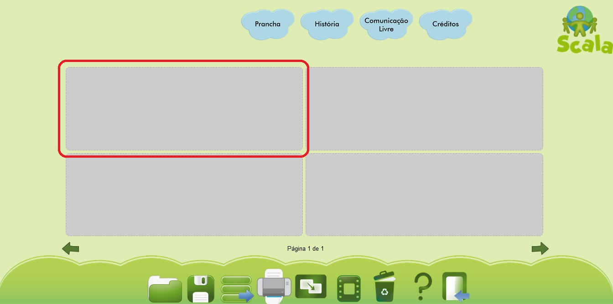
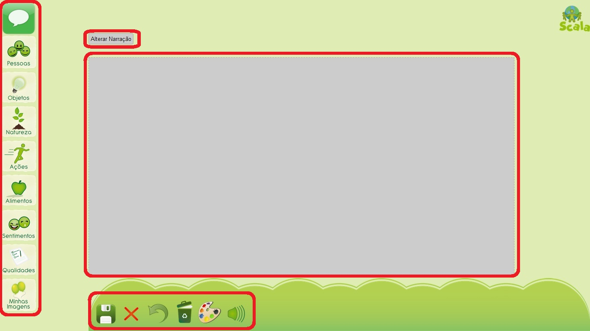
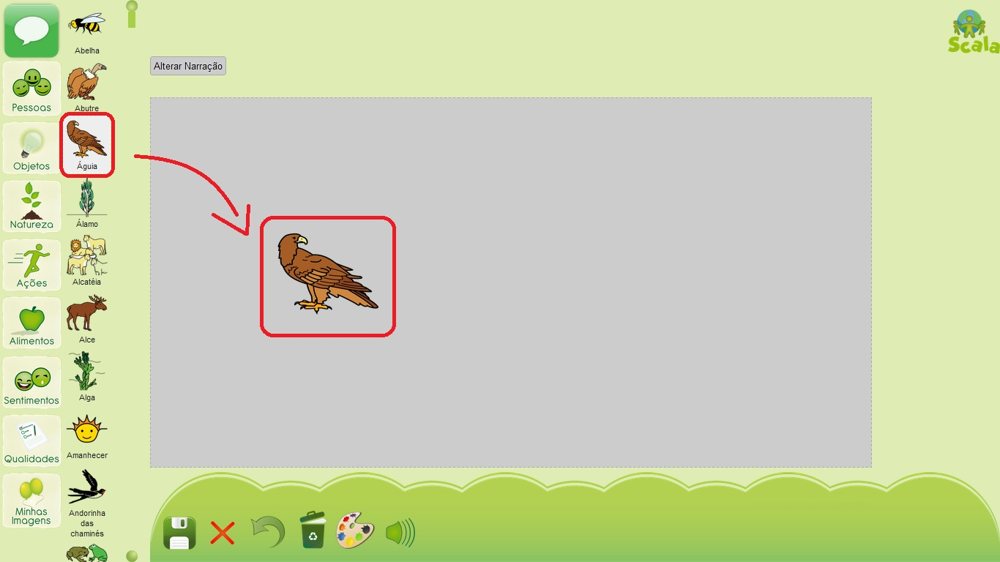
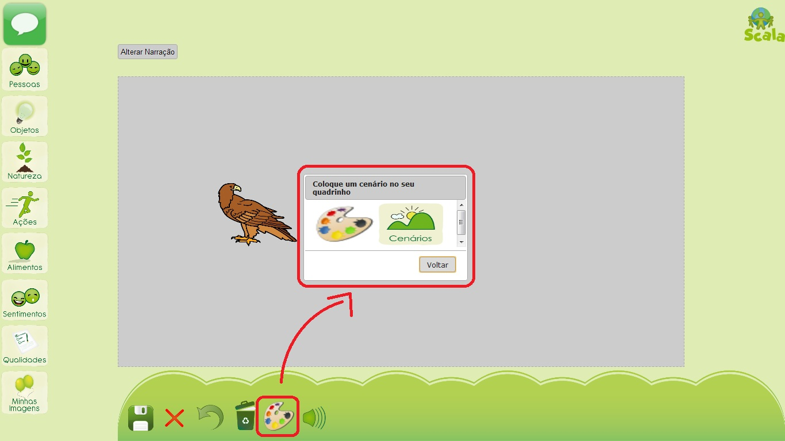
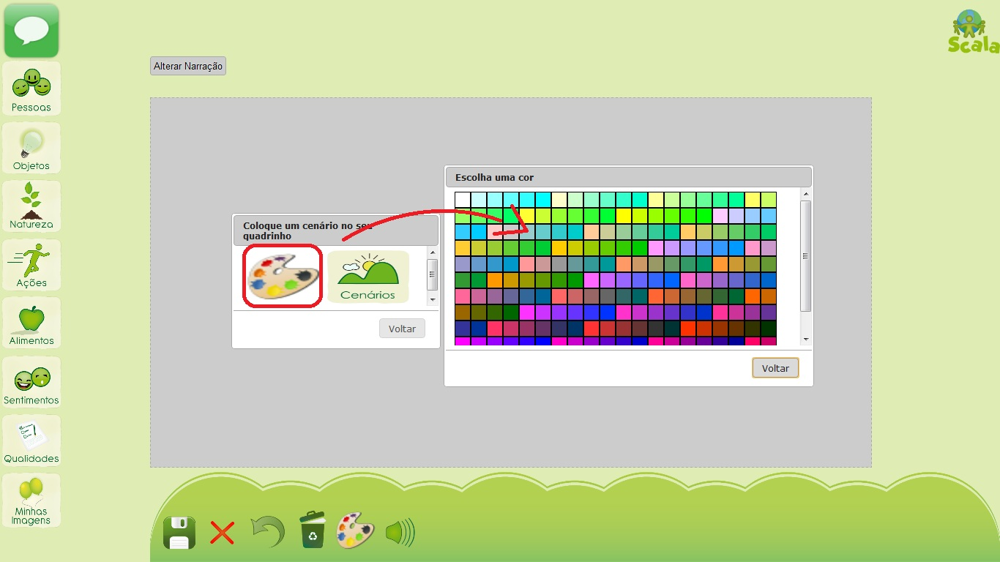

MÓDULO DE LA HISTORIA
- 1. MODIFICACIÓN DEL FORMATO DE PRESENTACIÓN DE LA HISTORIA
- 2. CREACIÓN DE UNA HISTORIA
- 2.1 Presentación de pantalla de edición
- 2.2 Insertar una imagen
- 2.3 Opciones de operaciones en las imágenes
- 2.3.1 Enviar imagen para frente y atrás
- 2.3.2 Aumentar y reducir imagen
- 2.3.3 Girar una imagen
- 2.3.4 Invertir una imagen
- 2.3.5 Eliminar una imagen
- 2.4 Cambio de escenario
- 2.5 Deshacer una operación y limpiar imágenes y escenarios
- 2.6 Crear una narración
- 2.7 Reproducir narración
- 2.8 Finalizar o cancelar la historieta
- 3 GUARDAR LA HISTORIA
- 4. APERTURA DE LA HISTORIA
- 5. EXPORTAR HISTORIA
- 6. IMPRIMIR HISTORIA
- 7. VISUALIZACIÓN DE LA HISTORIA
- 8. BORRAR HISTORIA
1. MODIFICACIÓN DEL FORMATO DE PRESENTACIÓN DE LA HISTORIA
Los formatos de presentación de la história son las diferentes opciones que encontramos para organizar la historia. Algunos formatos de presentación tienen una mayor cantidad de escenas y otros menos. Para modificar el formato de presentación de la historia pulse en " formato de presentación " que se encuentra en el menú inferior.
Imagen 1: Menu inferior – opción “formato de presentación”Elija un formato de presentación de la historia, pulse en él, y para cancelar, pulse en “atrás”.
2. CREACIÓN DE UNA HISTORIA
Para comenzar su historia, pulse en un formato de presentación de historieta elegido y será redirigido a una página de la confección del la escena.
Después de pulsar en la escena, entrarás en la pantalla de edición, y usted puede comenzar a crear su primera historieta.
Imagen 3: Pantalla de creación de las escenas.Presentación de la pantalla de edición
La pantalla de edicción presenta, en la parte izquierda, las categorías con sus respectivas imágenes, abajo ofrece un menú con opciones de edición, en el centro es el área de edición y arriba la leyenda.
Imagen 4: Pantalla de edición
2.2 Insertar una imagen
En la pantalla de edición, para añandir una imagen, primero debemos seleccionar una categoría a la izquierda y pulsar en ella para mostrarnos las imágenes que componen la categoría respectiva.
En seguida, selecionamos el imagen y hacemos un clic sobre la pantalla de edición. el imagen será insertado en el lugar en el que hicimos el clic, de acuerdo con el imagen siguiente.
Imagen 5: Insertar imagenEn el caso de insertar una caja de diálogo se puede elegir una de las tres opciones disponibles: expresión, pensamiento y narración, como presentamos abajo:
Para cada uno de estos tipos de cajas de diálogo tenemos, además de las opciones de cualquier imagen, que se presenta a continuación, la opción de insertar texto (Figura 7). Para eso basta añandir la caja de diálogo en la pantalla de edición y hacer un clic sobre ella. Para cambiar el texto haga un clic en el menú Texto (Figura 8) e insira un nuevo texto. Haga clic en alterar para guardar y cerrar para cancelar.
2.3 Opciones de operaciones en las imágenes
Asi como en el Módulo Tablero (Módulo Prancha), en el Módulo Históriabasta hacer un clic en la imagen para anular la selección después de alguna modificación o inserción. Sin hacer esta operacción, caso haga un clic, en otro lugar del cuadro de edición, el imagen podrá cambiar de lugar.
Al insertar una imagen haciendo clic en ella, aparecerán opciones de edición de imágenes. Como se muestra en la imagen siguiente.
2.3.1 Enviar imagen para frente y atrás
Para cambiar la posición de la imagen con relación a la otra, existe la opción para frente y atrás. Ellaenvía la imagen hacia delante o hacia atrás de las otras imágenes . En la imagen 10, inicialmente, el agua está atrás del algodón dulcey cuando hacemos clic en el ícono para enviar para frente(Imagen 11) el agua viene para frente del algodón dulce (Imagen 12).
Si queremos invertir y poner el algodón dulce para atrás otra vez, hacemos clic en el ícono para atrás (Imagen 13).
2.3.2 Aumentar y reducir imagen
Para aumentar o reducir imagen, tenemos las opciones de aumentar y reduzir, respectivamente, en el menú de opciones de edición. A continuación se muestra la ubicación de cada ícono en el menú y un ejemplo de uso.
2.3.3 Girar una Imagen
Para girar la imagen, utilice el ícono Girar en el menú de opciones de edición. Esta opción puede girar la imagen en 90 grados y en 90 grados como se muestra en el ejemplo siguiente.
2.3.4 Invertir una imagen
Para invertir la imagen, utilice la opción Invertir en el menú de edición. En esta opción, se puede invertir la imagen similar a un espejo.
2.3.5 Eliminar una imagen
Para eliminar una imagen, haga clic en el ícono Eliminar en el menú de edición.
2.4 Cambio de escenario
Además de la edición de imágenes, también puede cambiar el escenario de la historietaPulse el botón escenario, que se encuentra en el menú inferior y una ventana abrirá para que usted pueda cambiar
Imagen 23: Ícono - elegir escenarioUsted puede elegir un color para el fondo de la historieta, o una de las imágenes disponibles en nuestra galería de imágenes. Para cambiar el color, pulse en la paleta de colores y seleccione un color.
Imagen 24: Ícono - Elegir el color2.5 Deshacer una operación y limpiar imágenes y escenarios
Para volver en sus ediciones ya hechas se puede utilizar la opción “deshacer” para deshacer las operaciones anteriores, o utilice el ícono “Eliminar” para borrar todas las imágenes y escenarios. Mire abajo la ubicación de cada ícono.
2.6 Crear una narración
Al igual que una buena historia debe tener un narrador, usted puede escribir una narración pulsando en “modificar narración”, en la parte superior de la pantalla de edición. Después de escribir, haga clic en “modificar” y escucharás la narración arriba de la historieta.
2.7 Reproducir narración
Después de definir una narración para tu historieta, se puede escucharla con el nuestro sintetizador de voz. Para eso baste pulsar en el ícono presentado en la imagen siguiente.
2.8 Finalizar o cancelar la historieta
Después de editar la historieta, puede hacer clic en “Finalizar” para finalizar la edición y volver a la página con todas las historietas hechas. O puede hacer clic en “Cancelar”: en este caso, todos los cambios que has hecho será cancelada y vuelve a la página con todas las historietas.
3 GUARDAR LA HISTÓRIA
En cualquier momento durante la creación de su historia, tiene la opción de guardarla haciendo clic en el ícono “Guardar” en el menú inferior de la pantalla principal.
Imagen 30: parte inferior del menú - ícono GuardarDespués de pulsar en el ícono “guardar” se abre el cuadro de diálogo: "Elija cómo desea guardar su historia", en el que se escribe el nombre de la historia y la manera de guardarla. Hay tres opciones para guardarla:
- En el ordenador: Con esta opción su historia queda guardada y se puede llevar en una unidad móvil, como USB o CD;
- En Historias Públicas: En esta opción, la historia es accesible a cualquier otro usuario del Sistema Scala;
- En Historias Privadas: En esta opción, la historia sólo se puede acceder al autor.
4 APERTURA DE LA HISTORIA
Al crear una historia, en cualquier momento, usted puede utilizar la opción de“Apertura de la historia”. Pulse en el ícono “Abrir” en el menú situado debajo de la pantalla principal.
Imagen 32: parte inferior del menú: ícono abrir historiaDespués de pulsar en el menú se abre el cuadro de diálogo: "Elija la historia que desea abrir", con las opciones para elegir una historia que se guarda en el equipo, en las historias públicas o privadas, como ya se ha explicado en las opciones para guardar.
5 EXPORTAR HISTORIA
La opción de exportación, que está en el menú inferior de la pantalla principal se utiliza cuando se desea guardar la historia con la extensión pdf., teniendo así la posibilidad de abrirlo en otros aplicativos.
Imagen 34: parte inferior del menú: Ícono ExportarMientras la historia se genera en pdf. aparecerá el mensaje abajo y el aplicativo estará bloqueado, siendo imposible utilizarlo. En caso de pulsar sobre el mismo, hará que se cancele la exportación de la historia.
6 IMPRIMIR HISTORIA
Para imprimir la historia creada, simplemente, pulse en ícono de impresión que se encuentra en el menú inferior de la pantalla principal.
Imagen 36: parte inferior del menú: Ícono ImprimirDependiendo de la configuración de tu navegador abrirá una ventana con la vista previa de impresión y los ajustes.
7 VISUALIZACIÓN DE LA HISTORIA
La opción de vista previa le permite observar la historia creada y reproducida. En esta opción las narraciones creadas serán leídas por la aplicación.
 Imagem 37: parte inferior del menú: Ícono Vista Previa
Imagem 37: parte inferior del menú: Ícono Vista Previa
Al hacer clic en la opción “Vista previa” abre un cuadro de diálogo de vista previa en el cual se encuentra el botón ”reproducir”, como se muestra en la imagen siguiente.
8 BORRAR HISTORIA
Para borrar todas las historietas de una página basta pulsar el ícono “Borrar” localizado en el menú inferior de la pantalla principal.
Imagen 39: parte inferior del menú: Ícono BorrarDespués de pulsar en “Borrar” abrirá un cuadro de diálogo para confirmar, pulse en Ok para confirmar o Cancelar para cancelar la operación.